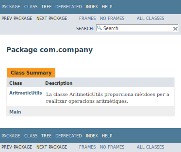
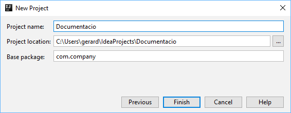
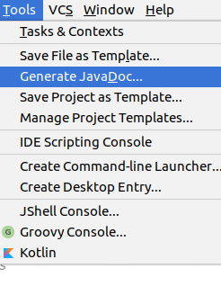
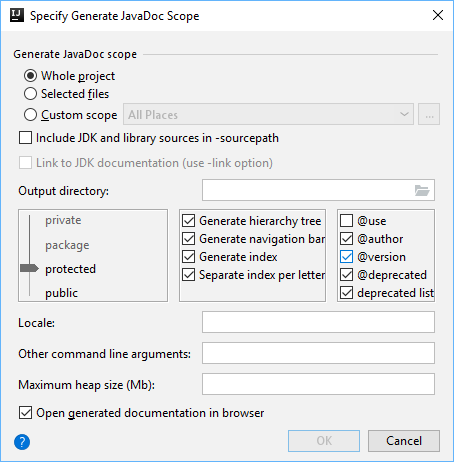
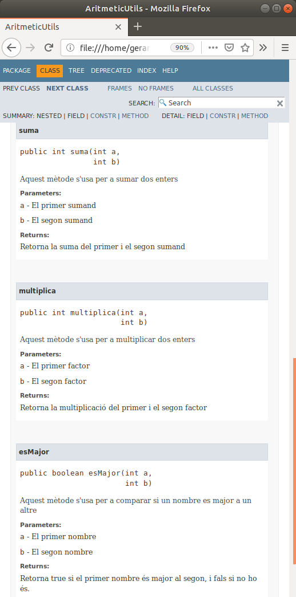

L'objectiu d'aquest CodeLab és utlitzar un Javadoc per a generar la documentació del nostre codi.
Javadoc és una eina que ve amb el JDK i s'usa per a generar la documentació del codi Java en format HTML des del propi codi.
Inicia IntelliJ i crea un nou projecte anomenat "Documentacio".



Per a que Javadoc pugui generar la documentació del nostre codi, hem de posar aquesta documentació en el format adequat.
Ja hem vist que Java suporta dos tipus de comentaris al codi. Anem a veure un tercer tipus de comentari que és el que s'usa per a la documentació:
Comentari de línia. El compilador ignora tot a partir de | |
Comentari multilínia. El compilador ignora tot a partir de | |
Comentari de documentació (doc comment). Javadoc utilitza els doc comments per a generar automàticament la documentació. |
Els doc comments es posen abans de cada classe i de cada mètode, per a indicar el propòsit de la classe o del mètode.
Javadoc disposa d'uns tags especials per a indicar certs atributs:
Tags de classes:
@author @version @since
Tags de mètodes
@param param-name @return
Fem un petit codi d'exemple i documentem-lo:
/** * La classe AritmeticUtils proporciona mètdoes per a * realitzar operacions aritmètiques. * * @author Gerard Falco * @version 1.0 * @since 2020-01-01 */ class AritmeticUtils { /** * Aquest mètode s'usa per a sumar dos enters * * @param a El primer sumand * @param b El segon sumand * @return Retorna la suma del primer i el segon sumand */ int suma(int a, int b){ return a+b; } /** * Aquest mètode s'usa per a multiplicar dos enters * * @param a El primer factor * @param b El segon factor * @return Retorna la multiplicació del primer i el segon factor */ int multiplica(int a, int b){ return a*b; } /** * Aquest mètode s'usa per a comparar si un nombre es major a un altre * * @param a El primer nombre * @param b El segon nombre * @return Retorna true si el primer nombre és major al segon, i fals si no ho és. */ boolean esMajor(int a, int b){ return a > b; } }
Genera la documentació
Ves al menú

Configura la generació de la Documentació:
- Marca els tags que vols incloure (
@author i@version ) - Especifica el directori on es generaran els fitxers HTML

Ja tenim preparada la nostra documentació, i la podem veure al navegador web.
